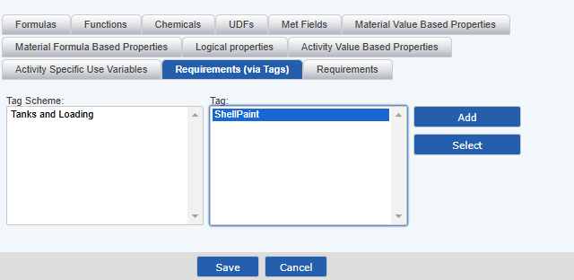
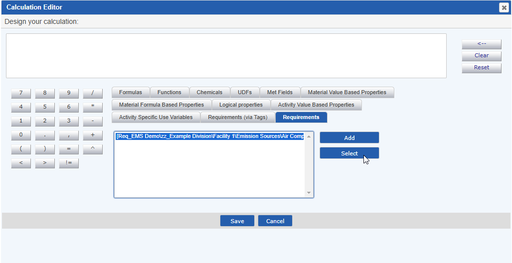

Tag schemes can be used to identify numeric values from parameters, system variables and standard calcs to be used in Material formula-based properties. Since materials may be used in many locations, material and activity-based formulas have no inherent sense of location, so a tag scheme enables relative association of standard requirements with the material formulas.
You may also reference explicit requirements (defined absolutely by location), such as system variables that are used system-wide. In this case, no tags are required.
When a material formula based property references a Tag Scheme and Tag, the system attempts to resolve the requirement to use by looking first at requirements directly underneath the location of the material data line, and then to requirements under the immediate ancestor, and so on up the hierarchy of the System Model until a requirement with the specified Tag Scheme and Tag is found. To determine the requirement value, the completion date of the material batch (matched via Facility local time) is used.
The tagged requirement must either be under the same parent object, or directly under an ancestor of the parent. It cannot be under another child object of the ancestor.
Only Tag Schemes which have been set to enforce only one object at a given location having the same Tag will be available from the Calculation Editor.
Tagged requirements may be used both in Material Formula Based Properties and in Material Activity Calculated Requirement scripts.
Note: Tag Schemes with the Track Value History option may not be used in either Material Formula Based Properties or Material Activity Calculated Requirement scripts.
To reference a tagged requirement in a material script:
Select the Schema and the Tag you want to use in the formula.

In the example above, the system will look for a requirement in the same location that has the tag scheme and tag "SWP: Benzene".
Syntax for requirement association via tags is:
[{TagSchemeName}:{TagName}]
To reference an explicit requirement in a material script:
Browse the hierarchy to find and select the requirement.

In the example above, the system will look the requirement "PM Emission Factor" only in the given explicit path.
Syntax for referencing explicit requirements is:
[Req_{Path + Name}]